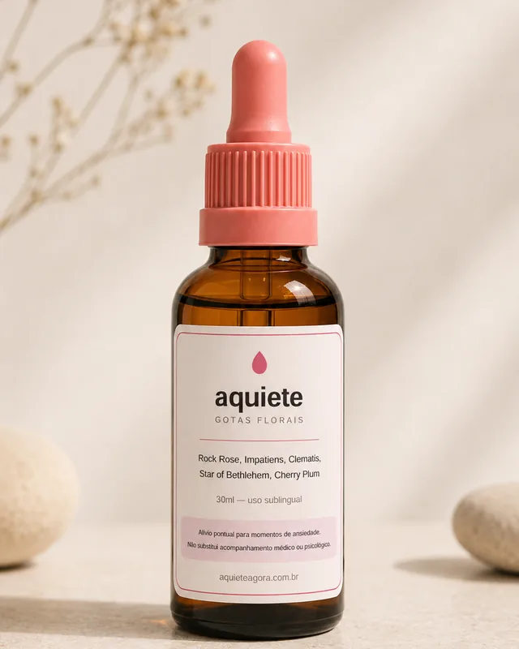
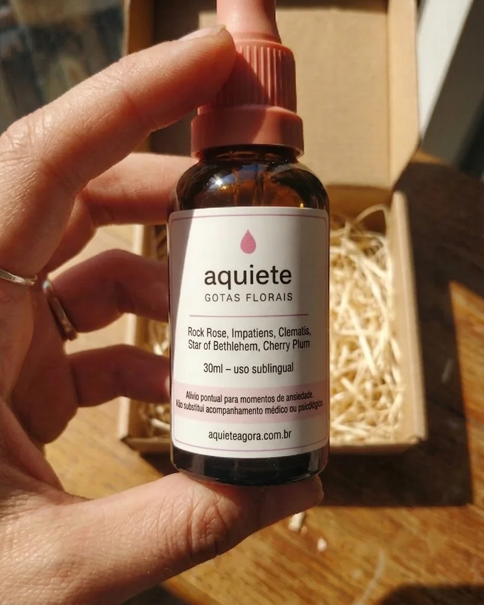
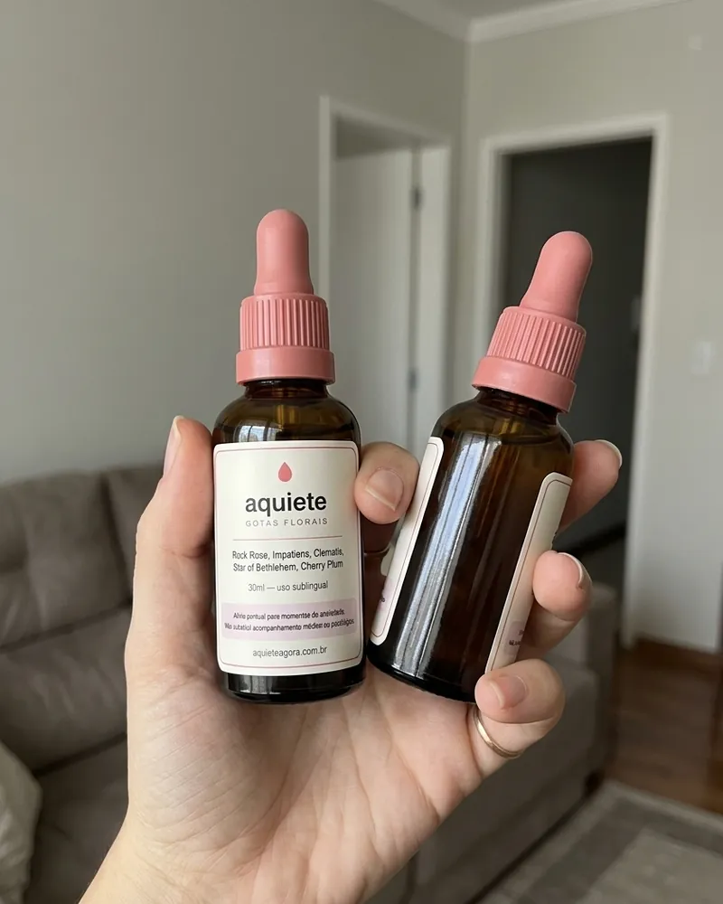

O "truque das 4 gotas" de quase 100 anos que está ajudando [mais de 127 mil] mulheres a segurar a crise de ansiedade na hora, sem tarja e sem dependência
Se você vive brigando com o coração disparado, com pensamentos que não te deixam em paz ou com aquele aperto no peito que chega do nada no meio da reunião, leia este texto curto agora, antes de qualquer coisa.
o médico / mulher com o frasco na mão
Basta um composto floral de quase cem anos, formulado pro momento em que aperta. Ele age junto com o seu organismo, sem efeito colateral e sem criar dependência.
Brasileiras, prestem atenção: existe um segredo pra hora da crise que a indústria farmacêutica não quer que você descubra.
Você merece alguma coisa de verdade pra hora em que está acontecendo. Uma que segure o susto, acalme o coração disparado e te devolva pro lugar onde você estava, sem precisar viver à base de comprimido.
Essa fórmula foi feita pro meio da crise, onde ninguém nunca fez nada, e já está mudando a vida de milhares de pessoas.
Depois de anos procurando, chegamos a uma solução natural e poderosa pro pânico repentino, pra cabeça que não para e pro medo de perder o controle na frente dos outros. Não é à toa que esse cuidado acessível e simples está bombando na internet!
Veja por que milhares de mulheres finalmente estão sentindo que retomaram o controle com o Aquiete, Gotas Florais:
Acaba com 3 inimigos da sua calma num frasco só
- Acalma o susto e o pânico repentino na hora
- Ajuda a segurar o medo de perder o controle
- Contribui para o equilíbrio emocional
- Te traz de volta quando a cabeça fica fora do ar
- 4 gotas embaixo da língua, sem água e sem ninguém perceber
- Sabedoria de quase cem anos, manipulada em farmácia
O Aquiete não é só mais um floral. É uma arma a favor da sua calma.

Resultado rápido
Em minutos, não em semanas, você já sente a diferença. O ombro desce da orelha, o ar volta a entrar inteiro e a mão para de tremer em cima da mesa, tudo isso enquanto você continua onde está.
Não é sorte. É a via sublingual: embaixo da língua tem muito vaso sanguíneo bem na superfície, e por isso chega rápido, sem passar pelo estômago.
Retome o controle da crise sem depender de tarja
Imagina estar na fila do mercado, sentir o aperto chegando e ter o que fazer, sem sair correndo e sem ter que inventar desculpa.
Esse composto te ajuda a atravessar a crise do jeito que você fazia antes de o estresse, a correria e o medo da próxima crise bagunçarem tudo.
Milhares de mulheres já estão fazendo isso. Agora é a sua vez.
Por que os florais que você já tomou não funcionaram pra você
A maioria dos florais é feita pra tomar todo dia e esperar o mês que vem. Um floral só, genérico, que não faz nada na hora em que você mais precisa.
Esse aqui é diferente.
São os 5 florais de emergência num frasco só: Rock Rose, Impatiens, Clematis, Star of Bethlehem e Cherry Plum. E vai embaixo da língua, pra chegar rápido, no meio da crise.
Chega de chute. Chega de jogar dinheiro fora. Só alívio na hora que aperta.

A fórmula certa, sem tentativa e erro
Achar alguma coisa que funcione na hora parece impossível. Chá, aplicativo, respiração, um monte de promessa vazia.
Aqui é simples.
Os cinco florais de emergência, manipulados em farmácia, num frasco do tamanho de um batom. Um frasco, um objetivo: te ajudar a atravessar a crise de forma natural.
Chega de tentativa e erro. Chega de procurar sem fim. Só alívio, quando você mais precisa.
O poder escondido dos 5 florais de emergência
E se a solução estivesse na sua frente esse tempo todo?
Esses cinco florais foram reunidos pelo médico inglês Edward Bach nos anos 1930, justamente pra momento de emergência: o susto, o pânico repentino, o medo de perder o controle. Mas ninguém consegue patentear uma flor, então a indústria farmacêutica enterrou o assunto.
Agora, formulado pra ir embaixo da língua e caber na bolsa, esse remédio caseiro de quase cem anos vira uma potência moderna pra hora da crise, mais rápida e mais prática do que nunca.
Com a fórmula certa, essas flores mudam vidas.

[Mais de 127 mil] pessoas já estão vendo resultado de verdade
"Meu coração disparava toda segunda antes da reunião. Em 9 dias eu já entrava na sala inteira. Chorei quando percebi."Sônia, 61 anos, Goiânia (GO)
"Fazia 3 anos que eu não queria começar com tarja. Comecei com isso e as crises no trânsito ficaram muito mais leves. Minha esposa não acreditou."Roberto, 58 anos, Juiz de Fora (MG)
"Acabou o aperto das 3 da manhã. Acabou a cabeça fora do ar. Me sinto 20 anos mais nova."Cláudia, 54 anos, Recife (PE)
Você não está sozinha. E sim, vai funcionar pra você também.
Comentários